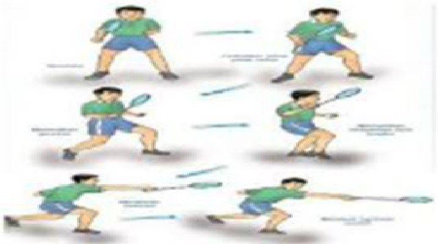

PUKULAN LOB
|
 1. Pada kedudukan sedia. 2. Pegang raket mengikut teknik pegang depan. 3. Bawa raket ke belakang atas kepala. 4. Siku fleksi sambil kepala didongakkan. 5. Bawa raket ke hadapan atas kepala dengan sikut fleksi. 6. Kontak bulu tangkis semasa ia berada di atas kepala. |
|---|